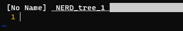
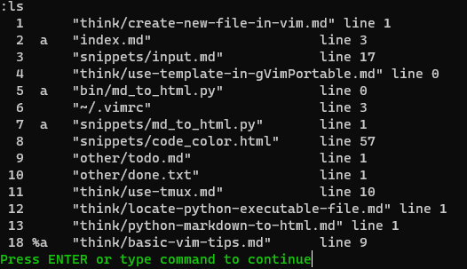

Basic vim tips
Regular expression
| Hotkey | Description |
|---|---|
:g/abc.*xyz |
Try regular expression. |
:g/abc.*xyz/d |
Delete match lines. |
Tabs

| Hotkey | Description |
|---|---|
:Te |
Open tab explorer. |
:tabs |
Show all tabs. |
gt |
Go to next tab. |
gT |
Go to previous tab. |
{i}gt |
Go to {i} tab. Eg.5gt means go to the fifth tab. |
:tabclose {i} |
Close {i}th tab. |
:q |
Close current tab. |
:qa |
Close all tabs. |
vim -p *.css |
Open all css files in tabs. |
vim -p hi.css test.css |
Open files in tabs. |
Search
| Hotkey | Description |
|---|---|
:vimgrep /vim/ *.wiki |
Search word vim in wiki files. |
:vimgrep /\<vim\>/ *.wiki |
Search full word vim in wiki files. |
:cfirst |
Move to the first match. |
:clast |
Move to the last match. |
:cprevious or cp |
Move to the previous match. |
:cnext or cn |
Move to the next match. |
:cl |
List all matches. |
/i |
Find any word contains character i |
/\<vim\> |
Find whole word match word |
n |
Move to next match |
N |
Move to previous match |
Split Window

| Hotkey | Description |
|---|---|
Ctrl-w j/k |
Go to up or down window. |
Ctrl-w h/l |
Go to left or right window. |
Ctrl-w p |
Go to previous window. |
Ctrl-w = |
Set an equal size to the split windows. |
Ctrl-w +/- |
Increase/decrease height. |
Ctrl-w >/< |
Increase/decrease width. |
Ctrl-w _ |
Maximize height. |
Ctrl-w | |
Maximize width. |
:sp or Ctrl-w-s |
Split window. Which one press less key? Ctrl-w-s |
:vsp or Ctrl-w-v |
Split window vertically. |
Buffer
| Hotkey | Description |
|---|---|
:ls |
List all previous opened files. |
:b{i} |
Open {i} file. |
:bnext or :bn |
Open next buffer file. |
:bprevious or :bp |
Open previous buffer file. |
:blast or :bl |
Open last buffer file. |
:bfirst or :bf |
Open first buffer file. |
Buffer mark

| Mark | Description |
|---|---|
- |
Inactive buffer. |
a |
Active buffer. The file is open for editing. |
h |
Hide buffer. |
% |
Current buffer. There is a cursor in this window. |
# |
Swap buffer. |
= |
Read only buffer. |
+ |
Already modified buffer. |
Fold
| Hotkey | Description |
|---|---|
zf |
Define a fold. Select lines then press zf. |
zo |
Open fold. |
zc |
Close fold. |
za |
Toggle fold. |
Why I create this document
- When I create a vim document, I can review what I learned.
- Record what I use frequently.